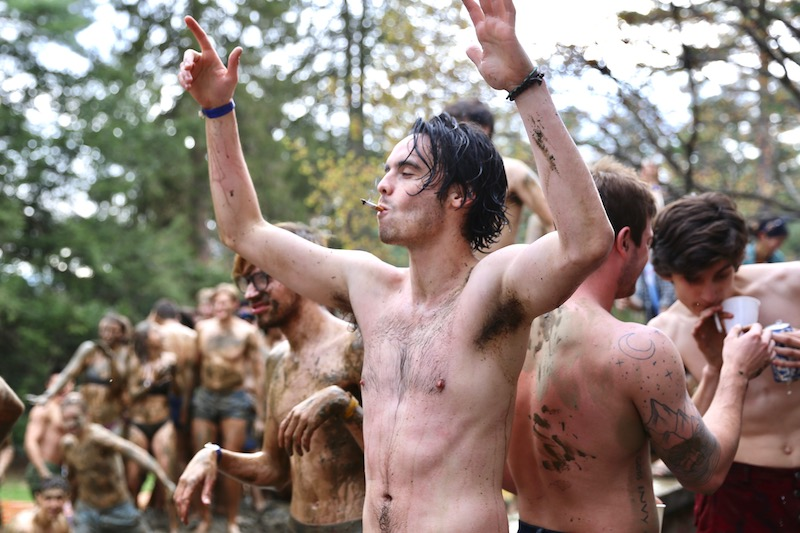
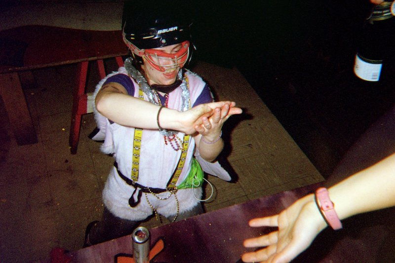
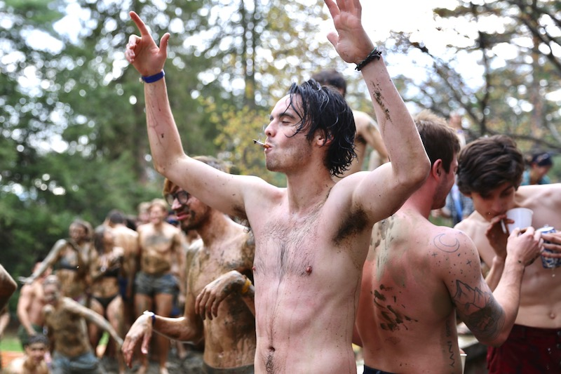
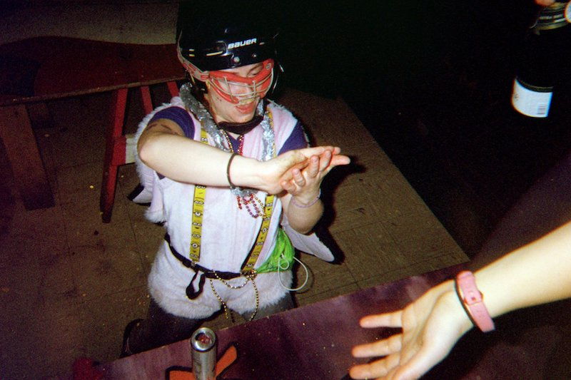
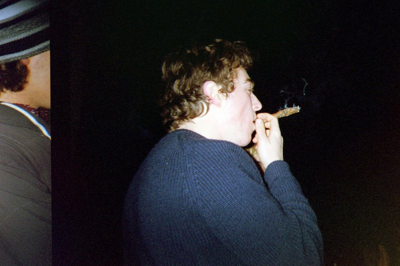
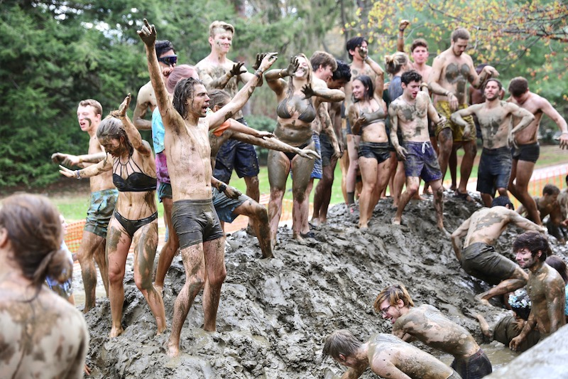
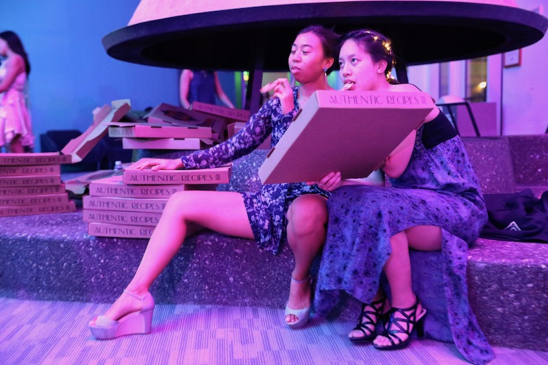
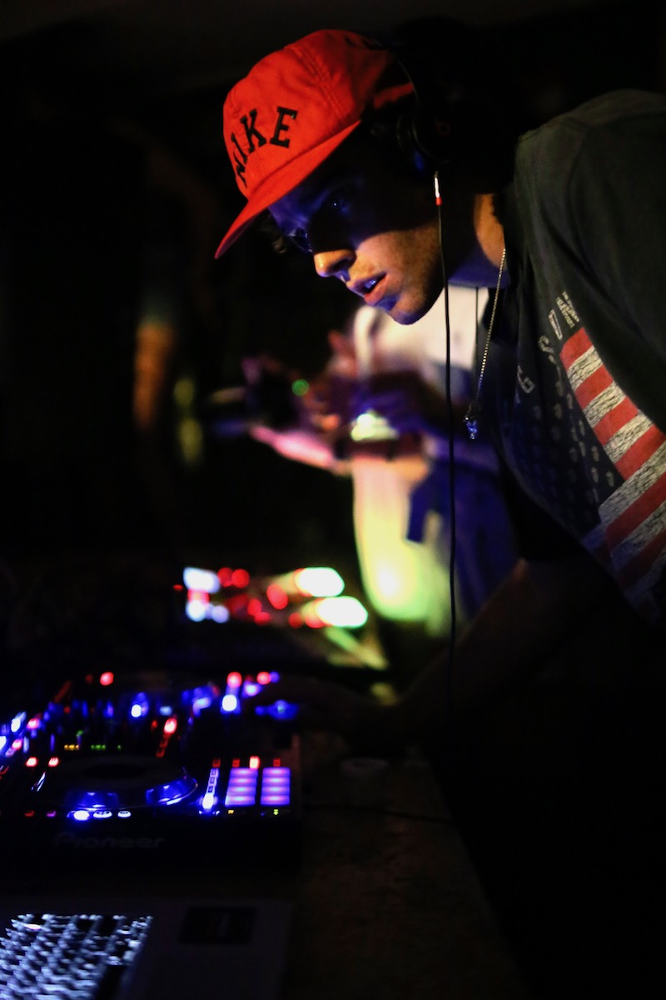
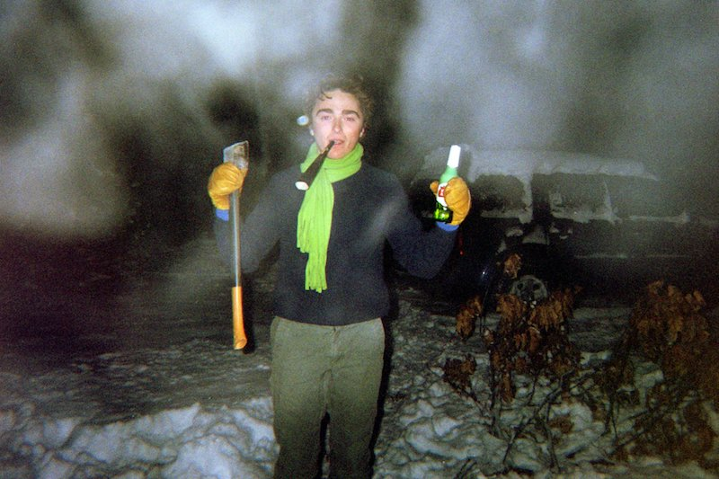
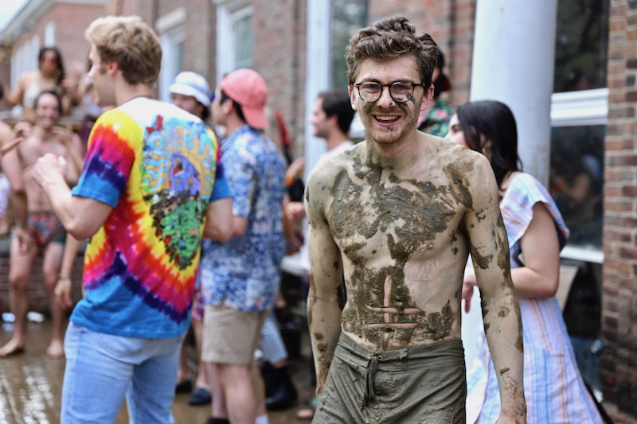
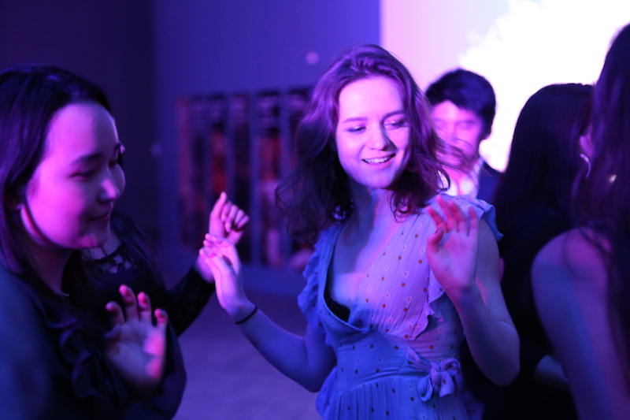
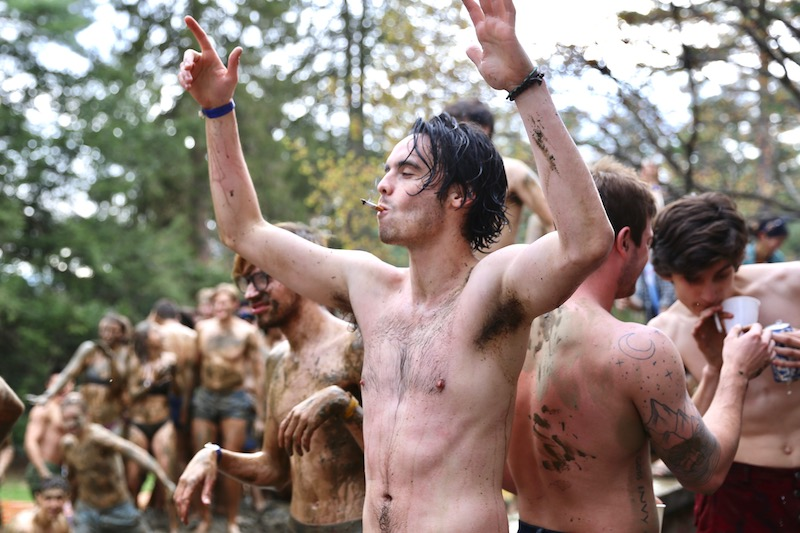
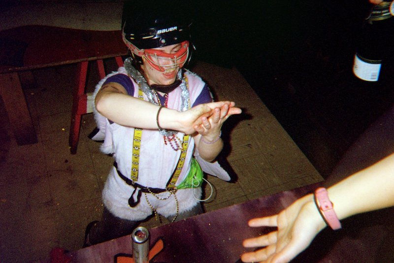
I take a camera to events around campus wherever I can, and these are some of my favorite from those miscellanous times. Mud is the most terrifying place to get photos because there is water and dirt flying through the air and I'm so scared something will hit my poor camera, but the shots are worth it because it is an absurd event. A few of the shots above (with the grainy look) are on film from a New Year's Eve party, which was also fun to play with for a night.